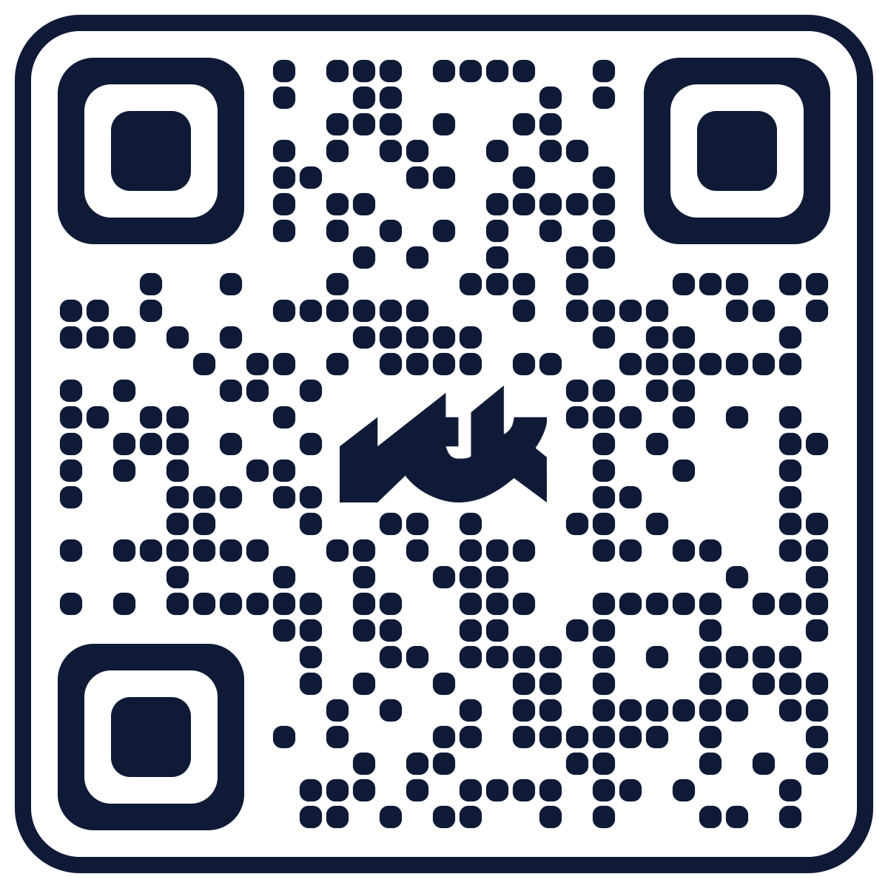

De VTK App is er!
Je lessenrooster, onze evenementen en tickets,
broodjes bestellen, Alma-maaltijden checken en meer!
Bestel broodjes bij Theokot
Bekijk je tickets, ook offline
Je lessenrooster en VTK-evenementen
Burgieclan en cursusdienst built-in

Scan en
download
vtk.be/app
Voor iPhone en
Android